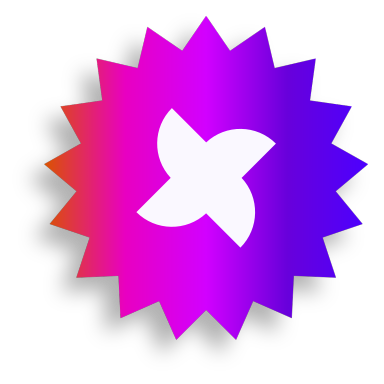

LA
NATION
Le digital est un univers qui s'étend sans fin, et il est facile de s'y perdre entre des outils déconnectés. La Nation du Web est née pour être votre point de ralliement.

AUJOURD'HUI C'EST,


Vous rendre totalement maître de votre univers digital : vos accès, vos données, vos outils. Pas de boîte noire, pas de dépendance — vous gardez la souveraineté complète sur votre croissance.
VISION GALACTIQUE 360°
Nous faisons le lien. Chez nous, une vue globale SEO + Ads + IA, c'est plus qu'un joli schéma : c'est une stratégie totale avec un objectif réel.
ARSENAL CHRONOLOGIQUE
Nous ne suivons pas les tendances, nous maîtrisons les cycles. De l'automatisation par l'IA au développement haute performance, nous utilisons la technologie pour accélérer votre trajectoire.
TRANSPARENCE RADICALE
Fini les zones d'ombre. Vous gardez le contrôle total sur vos accès, vos outils et vos données. Vous savez toujours ce qui est fait, pourquoi et avec quel ROI.
EXPERTISE TERRAIN
Chaque 360°, nous l'avons poussé sur le terrain : e-commerce, réseaux, SaaS, artisans et marques locales. Cette expérience nous permet d'aller vite et juste.
LE CŒUR DU RÉACTEUR.
Derrière chaque ligne de code, chaque campagne et chaque stratégie, il y a La Nation : un collectif d'experts soudés par une mission unique.


Parce que la performance vient de l'interconnexion. Quand le web, le SEO, les ads et le social sont pilotés par une seule équipe, chaque levier renforce les autres — fini les prestataires qui se renvoient la balle.
Cela dépend des leviers activés. Les campagnes Ads produisent des effets rapides ; le SEO et l'autorité se construisent sur quelques mois. Nous fixons des jalons clairs dès le départ.
Vous restez propriétaire de l'ensemble de vos comptes, accès et données. La transparence et la souveraineté sont au cœur de notre fonctionnement.
Oui. Nous concevons des agents IA et des automatisations sur mesure pour accélérer vos process, tout en gardant une validation humaine sur les contenus diffusés.
D'autres questions ?
Notre équipe vous répond sous 24h. Lançons la conversation autour de votre projet.